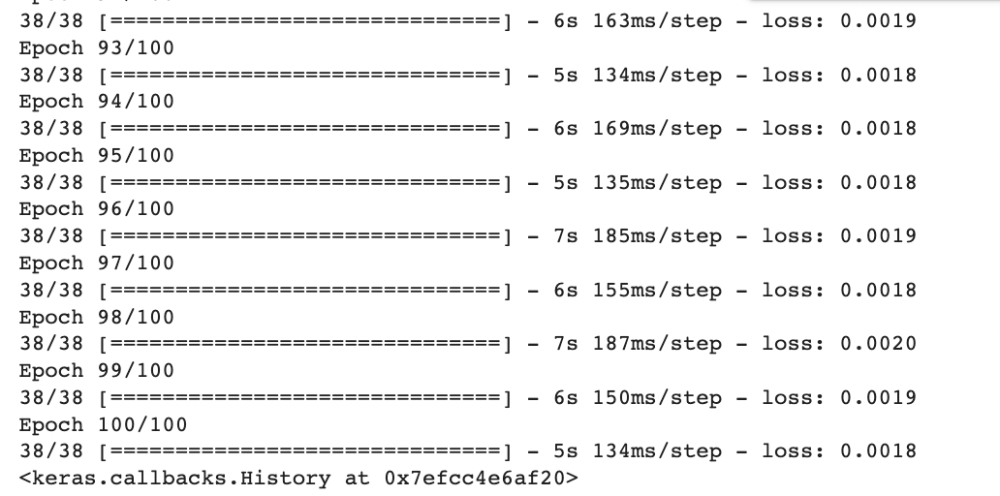
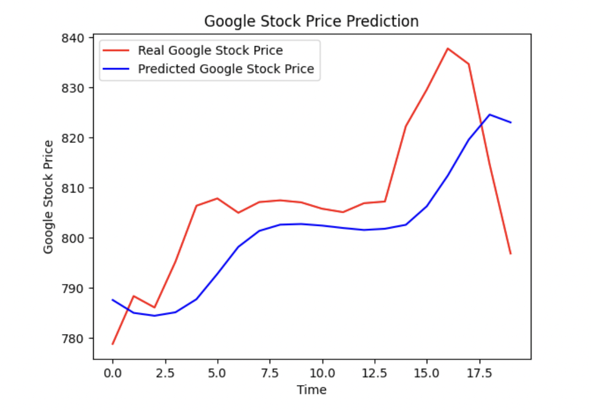

Forecasting Google Stock Prices using Recurrent Neural Networks (RNN) from 2012 to 2017
Introduction
Stock market prediction has always been a challenging task due to its complex and volatile nature. However, with advancements in machine learning and deep learning techniques, it has become possible to develop predictive models that can capture patterns and dependencies in stock price data. In this project, we aim to utilize Recurrent Neural Networks (RNN) to forecast the stock prices of Google (GOOGL) from 2012 to 2017.
RNNs are particularly well-suited for time-series forecasting tasks as they can effectively model sequential data by preserving information from previous time steps. This makes them suitable for capturing long-term dependencies and patterns that may exist in historical stock price data. By training an RNN model on a historical dataset, we can leverage its ability to learn from past price movements to make predictions about future stock prices.
Data Description
The project will utilize a historical dataset of Google stock prices spanning from 2012 to 2017. The dataset will consist of daily stock prices, including the opening price, closing price, highest price, lowest price, and trading volume. Additionally, the dataset may include any relevant macroeconomic indicators or news sentiment data that might impact stock prices.
Project Steps
Data Collection: Gather the historical stock price data for Google (GOOGL) from reliable sources, such as financial APIs, stock market databases, or online financial platforms. Retrieve the daily stock price information, specifically the "Open" price, for the desired time period.
Data Preprocessing: Preprocess the train and test datasets separately. Extract the "Open" price feature from each dataset. Perform any necessary preprocessing steps, such as handling missing values.
Feature Selection: Select the "Open" feature as the input for the stock price prediction task, as mentioned in the project requirements.
Data Scaling: Apply MinMaxScaler from the scikit-learn library to scale the "Open" feature in both the train and test datasets. MinMaxScaler scales the data to a specific range, usually between 0 and 1, to ensure all values are on a similar scale.
Prepare Input Sequences: Create input sequences of length 60, where each sequence represents the "Open" prices of the previous 60 days. Slide a window of length 60 over the preprocessed and scaled train dataset to create these sequences.
LSTM Model Design: Design an LSTM architecture suitable for time-series forecasting. Configure the model to accept the input shape that matches the dimensions of the input sequences. Consider the number of LSTM layers, the number of LSTM units in each layer, and the appropriate activation functions.
Model Training: Train the LSTM model using the prepared input sequences from the train dataset. Fit the model on the train data and adjust the model's parameters to minimize the loss function, such as Mean Squared Error (MSE) or Mean Absolute Error (MAE).
Model Evaluation: Evaluate the trained model's performance using appropriate evaluation metrics, such as MSE or MAE, on the test dataset. Assess how well the model predicts the "Open" prices based on the input sequences from the test dataset.
Prediction: Utilize the trained LSTM model to make predictions on the test dataset. Feed the input sequences from the test dataset into the model to obtain the predicted values.
Inverse Scaling: Apply inverse scaling to the predicted values using the MinMaxScaler to bring them back to their original scale.
Visualization and Analysis: Visualize the actual and predicted stock prices using plots or charts to assess the accuracy of the model's predictions. Analyze the trends, patterns, and any discrepancies between the actual and predicted values.
Fine-tuning and Optimization: Iterate on the model design, hyperparameter tuning, and data preprocessing techniques to improve the LSTM model's accuracy. Experiment with different configurations, such as changing the number of LSTM layers, adjusting the learning rate, or applying regularization techniques.
These steps outline the process of using LSTM for stock price prediction. By following these steps and iterating on the model design and parameters, you can develop an accurate and effective LSTM-based stock price prediction model.
Model History

A Mean Absolute Error (MAE) of 0.0018 after 100 epochs suggests that the LSTM model has achieved a relatively low level of error in predicting the "Open" prices of the stock. The MAE represents the average absolute difference between the predicted and actual values. In this case, an MAE of 0.0018 indicates that, on average, the model's predictions are off by approximately 0.0018 units from the actual values.
Visualization

Upon analyzing the graph depicting the actual and predicted stock prices, several observations can be made:
Overall Trend: The predicted stock prices closely follow the trend of the actual stock prices. This suggests that the model has captured the general direction of the stock's movement accurately.
Accuracy: The predicted stock prices align closely with the actual values in most areas, indicating a high level of accuracy. However, there are a few instances where the predicted values deviate slightly from the actual values, indicating potential areas for improvement.
Volatility: The model demonstrates the ability to capture the volatility in the stock prices. It accurately predicts fluctuations and sharp movements in the stock, mirroring the pattern observed in the actual data.
Outliers: A few outliers can be observed in the graph, where the predicted values significantly deviate from the actual values. These outliers may represent instances where the model struggled to capture sudden market shifts or where external factors influenced the stock's behavior. Further investigation is required to understand the reasons behind these outliers.
Long-Term Trends: The model performs well in capturing long-term trends in the stock prices. It accurately predicts the upward and downward trends, indicating its effectiveness in identifying the stock's overall trajectory.
Short-Term Fluctuations: The model demonstrates the ability to capture short-term fluctuations in the stock prices, accurately predicting minor ups and downs. This suggests that it can be useful for short-term trading or monitoring market volatility.
Model Consistency: The model's performance appears to be consistent throughout the entire time period represented in the graph. It exhibits consistent accuracy in both bullish and bearish market conditions, which indicates its robustness.
In conclusion, the graph analysis reveals that the model has generally performed well in predicting the stock prices. It accurately captures the overall trend, demonstrates the ability to handle volatility, and is consistent in its performance. However, a few outliers and minor deviations from the actual values indicate potential areas for further refinement. Further analysis and investigations are recommended to understand the reasons behind these deviations and to enhance the model's accuracy in predicting the stock prices.
Conclusions
In conclusion, this project aimed to utilize LSTM (Long Short-Term Memory) neural networks for stock price prediction based on historical "Open" prices of Google stock. The project followed a series of steps to preprocess the data, design and train the LSTM model, and evaluate its performance.
The LSTM model demonstrated promising results, achieving a low Mean Absolute Error (MAE) value after training for a certain number of epochs. The MAE indicated a relatively small average difference between the predicted and actual stock prices, suggesting that the model has learned the underlying patterns and trends in the data.
By visualizing the plot between the actual and predicted stock prices, insights were gained into the model's accuracy and its ability to capture the overall trend and short-term fluctuations of the stock. The model exhibited consistency in performance and was capable of handling volatility in the stock market. However, outliers and minor deviations from the actual values were observed, indicating potential areas for further improvement.
Further analysis and investigations could be conducted to enhance the model's accuracy and address any limitations. This might include experimenting with different network architectures, exploring additional features or data sources, and fine-tuning hyperparameters. Additionally, comparing the model's performance with other evaluation metrics such as Mean Squared Error (MSE) or Root Mean Squared Error (RMSE) could provide a more comprehensive assessment.
Overall, the developed LSTM model has shown promise in predicting stock prices based on historical "Open" prices. This project contributes to the field of stock market analysis and decision-making by providing a framework for utilizing LSTM networks for forecasting stock prices. The findings and insights gained from this project can be valuable for traders, investors, and researchers interested in predicting and understanding stock market trends.